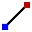
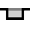

Modificando a geometria
No TecZone, você tem um poderoso editor 2D de esboços para modificar, limpar ou adicionar à sua geometria. Use a tecla S de atalho para entrar no modo de esboço. O editor exibe a peça na visualização de desdobramento.

Na visualização desenvolvida, clique no ícone Arrumar  ou pressione a tecla de atalho S.
ou pressione a tecla de atalho S.
Um menu é aberto com vários ícones para processar o desdobramento:

Painel de esboço
| Ícone | Símbolo | Significado |
|---|---|---|
|
Selecionar |
Selecionar objetos, linhas, entradas, etc. |
 |
Linha |
Esboçar uma linha |
|
Linhas ligadas |
Esboça qualquer número de linhas |
|
Paralelo |
Esboça uma paralela a uma linha |
|
Normal |
Esboça uma tangente a uma dobra |
|
Linha de dobra |
Esboça uma linha normal a uma linha |
|
Arco do ponto central |
Esboça uma linha de dobra |
|
Arco circular de 2 pontos |
Esboça um arco a partir de um centro, ponto inicial e ponto final |
|
Arco circular de 3 pontos |
Esboça um arco circular através de dois pontos definidos (ponto inicial e ponto final) |
|
Arco circular tangencial |
Esboça um arco tangencial aos elementos do esboço |
|
Retângulo |
Esboça um retângulo |
|
Retângulo do ponto central |
Esboça um retângulo a partir do centro |
|
Círculo |
Esboça um círculo. Selecione o ponto de centro do círculo e arraste o cursor para definir o raio ou insira um valor para o raio |
|
Circunferência com 2 pontos |
Esboça um círculo de acordo com a circunferência. Selecione um ponto na circunferência, depois um segundo ponto e um terceiro ponto. |
|
Circunferência com 3 pontos |
Esboça um círculo de acordo com a circunferência. Selecione um ponto na circunferência, depois um segundo ponto e um terceiro ponto. |
|
Círculo com 2 tangentes |
Esboça um círculo com duas tangentes. Insira o diâmetro do círculo, depois selecione a primeira tangente e então a segunda tangente. |
|
Círculo com 3 tangentes |
Esboça um círculo com três tangentes. Insira o diâmetro do círculo, depois selecione a primeira tangente, então a segunda tangente e então a terceira tangente. |
|
Ponto central do polígono - ponto de canto |
Esboça um círculo com três tangentes. Insira o diâmetro do círculo, depois selecione a primeira tangente, então a segunda tangente e então a terceira tangente. |
|
Ponto central do polígono - centro do canto lateral |
Esboça um polígono. Especifique o número de lados e selecione um ponto central e o meio de uma aresta lateral |
|
Polígono com canto lateral |
Esboça um polígono. Especifique o número de lados e defina o ponto inicial e o ponto final de um lado. |
|
Utilização |
Arredonda o canto no vértice de dois elementos de esboço usando um raio inserido, sendo que é criado um arco tangencial |
|
Chanfradura |
Cria um chanfro em um canto da interseção de dois elementos do esboço |
|
Aparar o canto redondo |
Apara o canto na interseção de dois elementos do esboço com um raio inserido |
|
Aparar o canto angular |
Apara o canto na interseção de dois elementos do esboço com um retângulo. O tamanho do retângulo pode ser inserido antecipamente. |
 |
Corte livre quadrático |
Cria um corte livre retangular. Você deve inserir a distância do canto, profundidade do corte livre e então selecionar um canto. |
|
Corte livre orifício longitudinal |
Cria um corte livre com forma de furo oblongo. Você deve inserir a distância do canto, largura do corte livre, profundidade do corte livre e então selecionar um canto. |
|
Corte livre triangular |
Cria um corte livre triangular. Você deve inserir a distância do canto, largura do corte livre, profundidade do corte livre e então selecionar um canto. |
|
Abertura da chave |
Cria um rasgo em um círculo com os valores inseridos. |
|
Arredondamento total 3 segmentos |
Arredonda três elementos do esboço conectados |
|
Alongar o elemento |
Selecione o elemento de esboço que deve ser estendido |
|
Aparar o elemento |
Selecione o elemento de esboço que deve ser cortado |
|
Juntar |
Usado para aparar e juntar diversas polilinhas separadas em uma |
|
Elementos de deslocamento |
Desloca um ou mais elementos do esboço, arestas do modelo esboçado ou faces do modelo por uma distância especificada |
|
Deslocar |
Selecione um elemento de esboço com ctrl, selecione um ponto de referência e mova o elemento de esboço |
|
Girar |
Selecione um elemento de esboço com ctrl, selecione um ponto central de rotação e, em seguida, um ponto inicial e um ponto final para girar o elemento de esboço |
|
Escalar |
Selecione um elemento de esboço com ctrl, selecione um ponto de base e, em seguida, um ponto de referência inicial e um ponto de referência final para dimensionar o elemento de esboço |
|
Espelhar |
Selecione um elemento de esboço com ctrl, o início da linha de espelhamento e, então, o final da linha de espelhamento para espelhar o elemento de esboço |
|
Modelo linear |
Use padrões lineares para criar múltiplas cópias referenciadas de um ou mais elementos do esboço que você pode espaçar em distâncias iguais ao longo de um ou dois caminhos lineares. Clique no padrão linear e insira os valores desejados |
Modelo circular |
Use padrões circulares para criar múltiplas cópias referenciadas de um ou mais elementos do esboço que você pode espaçar em distâncias iguais em torno de um eixo. Clique nos padrões circulares e insira os valores desejados |
|
|
Combinar superfícies |
Selecione dois ou mais elementos do esboço fechados para combinar superfícies entre si |
|
Superfície de corte |
Selecione dois ou mais elementos do esboço fechados para gerar uma área de corte dos elementos selecionados |
|
Aparar a superfície |
Selecione dois ou mais elementos do esboço fechados para aparar a superfície |
|
Copiar corte livre |
Você pode fazer múltiplas cópias de um entalhe ao longo de uma aresta, usando esta ferramenta. Primeiro, insira o espaçamento entre as cópias e o número de cópias do entalhe que você deseja fazer. Depois, selecione o entalhe clicando nos segmentos de duas linhas adjacentes ao entalhe |
|
Excluir corte livre |
Você pode excluir um entalhe em um canto ou ao longo de um segmento de linha, usando esta ferramenta. Clique nos segmentos de duas linhas adjacentes ao entalhe e o entalhe será removido |
|
Espelhar corte livre |
Você pode espelhar um entalhe em um canto ou ao longo de um segmento de linha, usando esta ferramenta. Clique nos segmentos de duas linhas adjacentes ao entalhe e o entalhe será espelhado |
|
Conjunto de curvas |
Para iniciar um novo estriado, clique no ponto inicial e, à medida que você clicar nos pontos subsequentes o estriado será criado. Se você desejar fechar o estriado, pressione a tecla ALT e então clique |
|
Perfil |
Digite o comprimento de base, altura do flange, espessura, ângulo do flange, raio interno e pressione Enter para criar um perfil |
|
Texto |
Usado para desenhar texto que será marcado na peça pela máquina laser. Quando você clicar neste botão de ferramenta, a barra de entrada exibe caixas de entrada para o texto, o tamanho e o ângulo de rotação |
|
Texto |
Usado para usar os formatos dos caracteres em qualquer fonte TrueType e convertê-los em polilinhas. Então o ferramental laser poderá ser aplicado a estas polilinhas e elas poderão ser cortadas. Na primeira vez que este botão é clicado, a caixa de diálogo Fonte aparece, permitindo que você escolha a fonte a ser usada para o texto |
Formas padrão |
Usado para criar diversas formas comuns e inseri-las no desenho. Quando você clica neste botão, a caixa de diálogo Criar forma aparece permitindo que você escolha na paleta de formas comuns listadas |
|
|
Dimensionamento simples |
Selecione o primeiro ponto de dimensionamento, depois o segundo ponto de dimensionamento e posicione a linha de dimensionamento |
|
Dimensionamento de relação |
Selecione o primeiro ponto de dimensionamento, depois o segundo ponto de dimensionamento e posicione a linha de dimensionamento |
|
Corrente de medição |
Selecione o primeiro ponto de dimensionamento, depois o segundo ponto de dimensionamento, posicione a linha de dimensionamento e selecione o próximo ponto de dimensionamento |
|
Medida ordinal horizontal |
Dimensões ordenadas são um conjunto de dimensões medidas a partir da ordenada zero do desenho. Selecione um ponto de referência e posicione o dimensionamento |
|
Medida ordinal vertical |
Dimensões ordenadas são um conjunto de dimensões medidas a partir da ordenada zero do desenho. Selecione um ponto de referência e posicione o dimensionamento |
|
Dimensionamento do ângulo |
Cria um dimensionamento para um ângulo. Selecione a primeira linha e então a segunda linha na qual você deseja dimensionar o ângulo |
|
Dimensionamento do raio |
Cria um dimensionamento para um raio. Selecione o círculo no qual você deseja dimensionar o raio. Dimensione o diâmetro com ctrl |
|
Dimensionamento do raio com linha de referência passada |
Cria um dimensionamento para um raio com líder contínuo. Selecione o círculo no qual você deseja dimensionar o raio. Dimensione o diâmetro com ctrl |
|
Marcação |
Use para adicionar notas ao desenho sob forma de chamadas. Para criar uma chamada, digite o texto a ser exibido, clique para indicar onde a seta deve apontar e clique novamente para indicar onde o texto deve ser posicionado. |
|
Dimensões do segmento |
Use para adicionar dimensionamento para linha reta e segmentos curvos. Clique no segmento a ser dimensionado e clique novamente para posicionar a dimensão. Ou continue segurando e clique em um segmento para posicionar a dimensão automaticamente. |